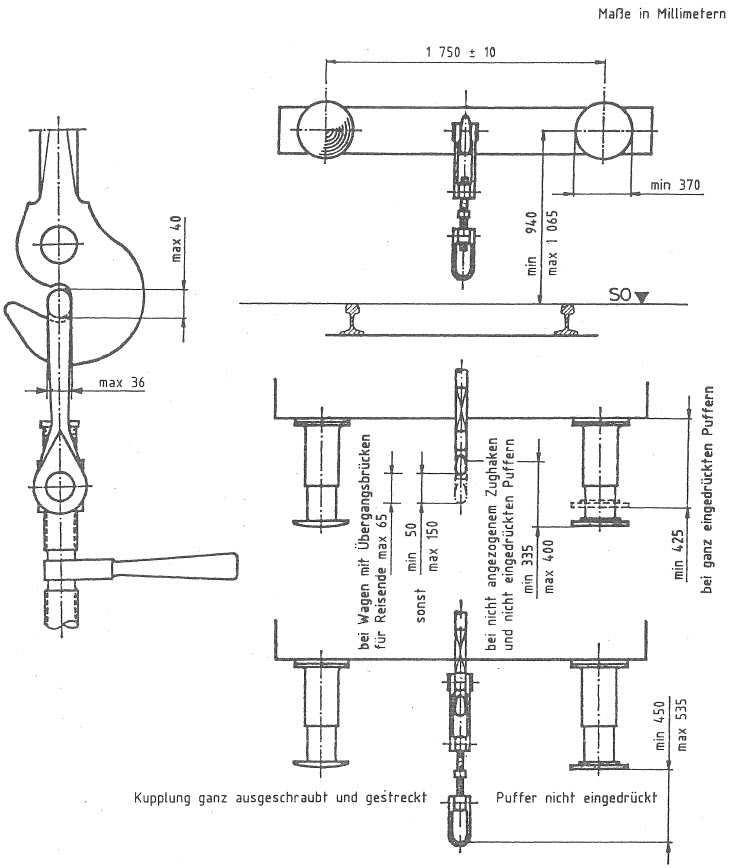

Nichtamtliches InhaltsverzeichnisEisenbahn-Bau- und Betriebsordnung (EBO)
Eisenbahn-Bau- und Betriebsordnung (EBO)
Anlage 10 (zu § 24)
Zug- und Stoßeinrichtungen
(Fundstelle: BGBl. I 1991, Nr. 30 Anlageband S. 27)

- 1.
- Die Pufferscheiben müssen so bemessen sein, daß die Puffer beim Durchfahren der in § 21 Abs. 1 genannten Gleisbogen nicht hintereinandergreifen können.
- 2.
- Der in Blickrichtung auf die Stirnseite des Fahrzeugs linke Pufferteller muß gewölbt sein. Sind beide Pufferteller gewölbt, so darf der Wölbungsradius nicht kleiner als 1 500 mm sein.
- 3.
- Die Pufferteller müssen einen Kreis mit dem Durchmesser von 370 mm überdecken, der oben und unten um jeweils 15 mm abgeflacht sein darf.